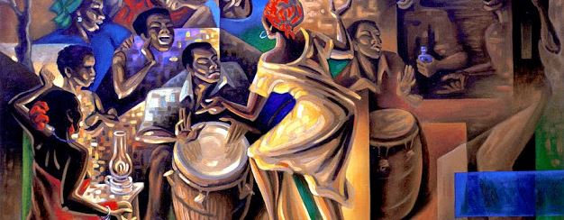
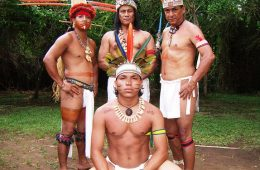

The Puerto Rican population-including the islands of the Caribbean- are the pioneers of America's most mixed DNA. Each one of the "West Indies" people has at least 1 % of ethnicy of each country in the world. The common countries that we share by in our blood are the Native "Taínos", Europeans (North, Central, and South), and same for Africa (North, Central, and South). These cultural ethnicies has aported to our unique cultural mix in the Caribbean.
On my DNA result's:
As we are the most mix people in the Americas, our struggle for Independece has been a difficult topic for all of us. At first, our island was invaded by the Spaniards in 1502. In 1898, as we were the most important country in the whole Caribbean by the trades and world's leader of sugar cane... we got invaded (same time for Cuba) by the United States. Our identity has been always a colony aka "Commonwealth" problem. We were spaniards, but at the same time not. We are United States citizens, but at the same time we are not. This is a nonstop controversy, in which people do not care about us. Not a lot of people knows the thruth about our history and the struggle of Indepencence. All the massacres, human experiments, corruption, and slavery, and more... coming from our invadors, the United States. Also, something that we could not have in our possesion it was our Puerto Rican flag. As an example, if you had a flag, the US military or troops they had the right to kill or use you as a human experiment. This was till 1954 when they made us a Commonwealth. Also, they gave us our "citizenship" in 1917 just to send our people to the First World War. Even though we have more history to tell, our pride is based on our roots. We are proud of being mix, we are proud of our African roots, we are proud of our European roots, we are proud of our native roots, we are proud as a community of social struggle resistance, and we are proud to have such an unique culture that it does not matter what else is taken away from us, we we still have that pride of being Puerto Rican by our Ancestors.
Our most important roots comes from Africa, specially the West. All their religious (like Yoruba) and music influences still in our daily lives activities. Based on their roots and what they bring to Puerto Rico, their sound of music make an unique genre called "Bomba". This genre is only found in Puerto Rico and it was made by African slaves and Mulatos. Nowadays, this still an important music to dance and tell stories about our ancestors. From the Bomba music, those were influencers for the Salsa music. The Cuban singer, Celia Cruz, is the best example of our Afrian roots and our rich culture and music. Listen to "Quimbara" song done by Puerto Ricans and Cubans.
To read more about our African roots, please visit Salon Hogar - Breve Historia Negra.
Even thought the Europeans killed them all, the majority of Puerto Ricans have their DNA on our blood and the roots in our culture. We have kept few words from the Taino people, like the "Barbeque" , which it ws translated to Barbecue aka BBQ.. Also, the name of the majority of our cities are on Taíno languege. Important cities like: Guaynabo, Cayey, Humacao, Caguas, and others.
To read more about our Taíno roots, please visit Taino Indian Culture
Our most influencial and dominant roots. The Iberian peninsula -Specially Spain- bring us the mix of Europe in the Conquest era. Besides all the slavery and sad history of their conquer, they also bring us the happiness of culture and music. From Italian cousine to Arabic coffee. All the mix from Europe and Africa, they gave it all to us. In which, that mix of culture we called "La Salsa". Also, they imposed us to have the Catholic religion as a foundation to our island liberty and dominant as the important port in the Caribbean. Because the translation of Puerto Rico into English means, "Rich Port". Flamenco music, such a dramatic and rich music.
To read more about our Spaniards and European roots, please visit Spain in Puerto Rico: The Early Settlements